環資國際 · 企業講座
AI 開發的下一步
從輔助寫程式
到 AI 原生系統
工具一年換好幾套，
留下來的是方法。
Kevin Tsai
開場 · 講師介紹
凱文大叔Kevin Tsai
上市公司 MIS 主管 · 20 年以上 Java 開發 · 近年專注 AI 應用
專長語言模型整合、RAG 知識庫與智能化工作流程；手上 6 個企業專案，七成五以上的 commit 由 AI 協作。
著作《使用 Spring AI 打造企業 RAG 知識庫》
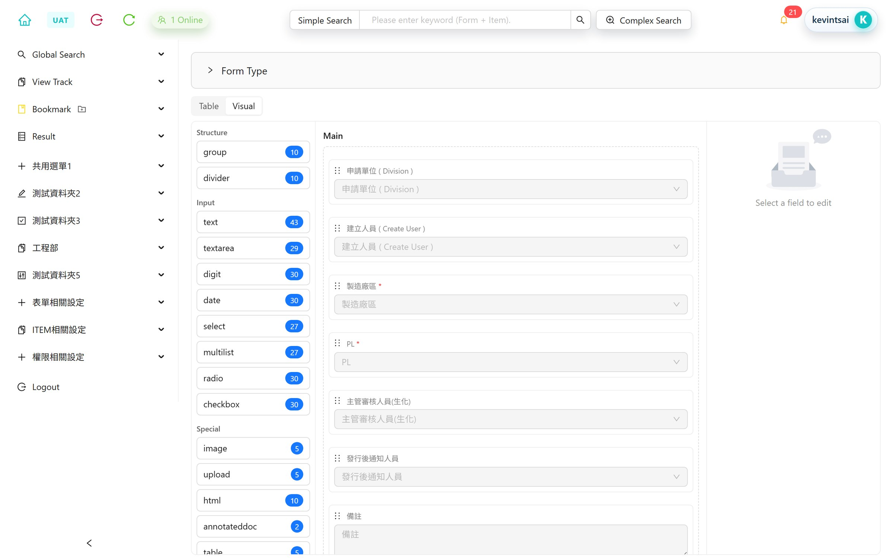
Mini-PLM
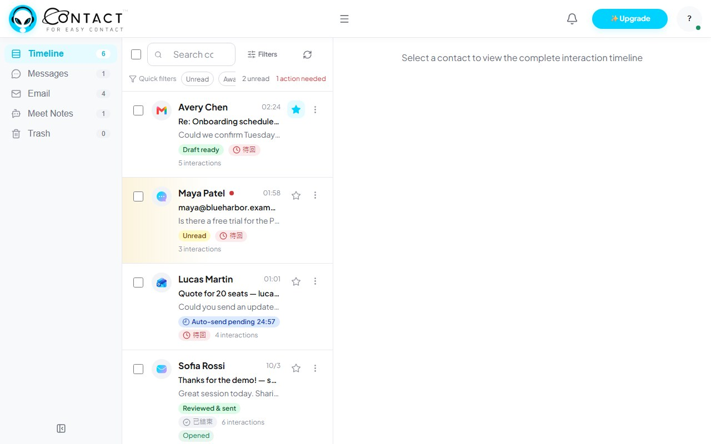
任務管理系統
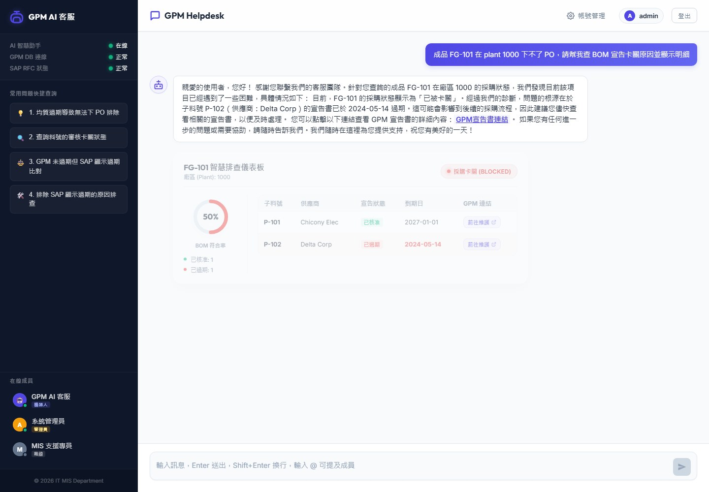
客服機器人
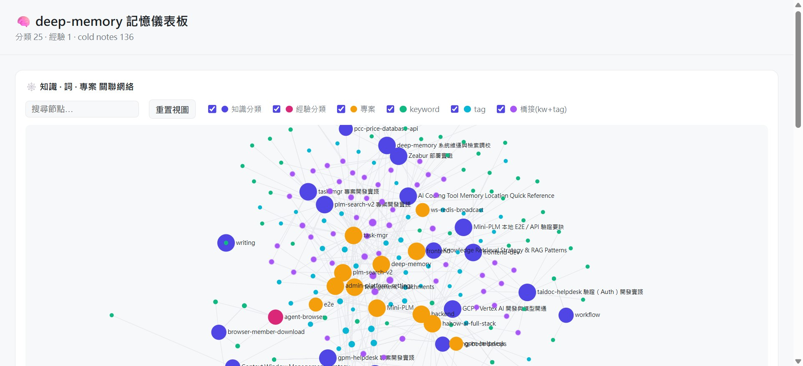
AI 記憶庫
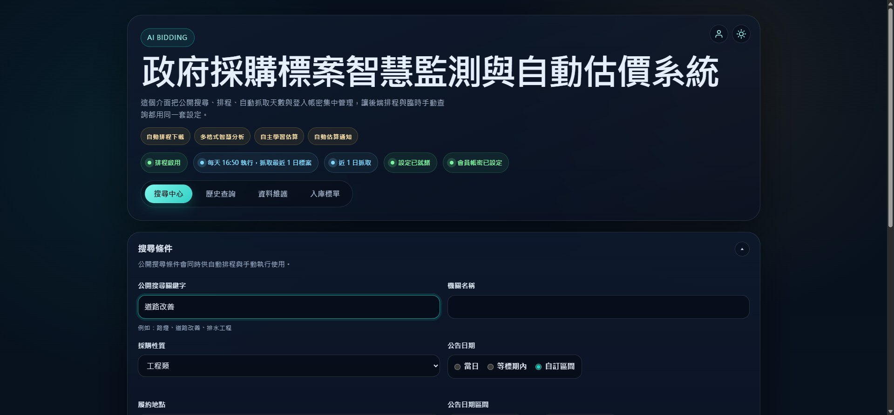
標案估價
法規技能包
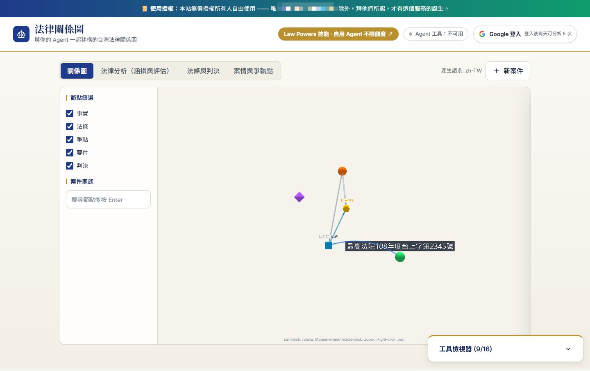
法律關係圖
字導字演
知識島大冒險
YT 影片：辯論分析
會前問題 · Q1
問題 1 當知識庫包含大量專案報告書、計畫分析等長篇文件時，應如何進行文件切分、摘要、索引及檢索設計，才能提升資料召回與檢索的精準度？
先分問題類型，各走各的路
| 類型 | 例子 | 走哪條路 | 原因 |
|---|
| 精確查找 | 計畫編號、條號 | 欄位或關鍵字 | 向量分不清編號 |
| 單份問答 | 這份的採樣方法 | 限定文件再找段落 | 範圍已知 |
| 跨報告彙整 | 近五年 VOCs 減量做法 | 先挑報告，再找段落 | 直接找，會被少數長報告佔滿 |
| 統計、比較 | 各縣市歷年經費 | SQL 查資料表 | RAG 拿不到完整母體 |
| 全庫主題 | 談了哪些議題 | 事先產生主題摘要 | 這是摘要問題 |
詳見／對應講座：B2-6 檢索：先撈，再排 · B2-7 判斷：小模型先分流
會前問題 · Q1
三層索引：先挑報告，再找段落
| 層 | 存什麼 | 用在哪 |
|---|
| 文件層 | metadata、全文摘要（約 300～500 字）、目錄 | 從一萬五千份挑出 10～30 份 |
| 章節層 | 每一章的摘要，掛章節路徑 | 長報告先定位到章 |
| 段落層 | 父子分塊：小塊比對，命中後回傳所屬大塊 | 在挑出的報告裡找證據 |
- 依報告自己的章節結構切，不用固定字數；一節太長才在段落邊界再切
- 每塊前面加「報告名＞第三章＞3.2 節」路徑，也可請 LLM 補 50～100 token 的位置說明
詳見／對應講座：B2-5 圖片、PDF、聲音，先變成文字 · B2-6 檢索：先撈，再排
會前問題 · Q1
召回先放大，再逐段篩選
| 階段 | 做法 | 留下 | 部署 |
|---|
| 1 放大召回 | 向量＋關鍵字雙軌，metadata 先過濾 | 100～200 筆 | 地端 |
| 2 精排 | rerank 逐筆打相關分數 | 20～30 筆 | 地端 |
| 3 篩選 | Jev（雲端的小型是非題判斷服務）逐段問「有沒有回答所需資訊」 | 5～10 筆 | 雲端，只送公開或去識別化資料 |
| 4 生成 | LLM 只依留下的段落回答，附報告名與頁碼 | — | 依資料分級 |
- 政府單位多用地端 embedding，效果常比雲端差：用筆數換召回，再逐段提高精準度
- 雙軌一定要有；中文斷詞用 ICU 或 CKIP 或 2-gram，再加領域詞典
詳見／對應講座：B2-6 檢索：先撈，再排 · B2-7 判斷：小模型先分流，需要時才叫 LLM
會前問題 · Q1
metadata 先拿系統欄位，再逐步補
加哪些欄位
識別：計畫名稱與編號、年度、主辦與執行單位
內容：報告類型、版本、介質、污染物、地區、資料期間、引用法規
位置：章節路徑、頁碼、內容型態
管控：公開等級，檢索前先過濾
取得順序（成本由低到高）
1 來源系統已有的欄位
2 規則與詞典：編號、年度、縣市、污染物、條號
3 抽不到才用小型判斷模型分類，記信心值
4 版本、公開等級抽樣人工核對
查詢時→抽出問題裡的條件→帶條件檢索→0 筆就逐步放寬並說明→條件顯示給使用者可改
詳見／對應講座：B2-6 檢索：先撈，再排 · B2-8 模型是設定，不是程式碼
會前問題 · Q1
表格與圖表抽成資料，數字不靠向量
- 表格、圖表、統計數據抽出來存進資料庫，記來源報告與頁碼，抽樣核對
- 向量庫只留「表格說明＋表頭」一塊，內容型態標「表格」，並記對應的資料表
- 檢索命中這類塊時，改走 SQL 查資料表，不拿向量裡的文字回答數字
- 圖表優先找原始數據；找不到才用多模態模型產生文字描述，標「AI 描述」，數字人工核對
- 跨頁的大表，補上重複的表頭
詳見／對應講座：B2-5 圖片、PDF、聲音，先變成文字 · B2-6 檢索：先撈，再排
會前問題 · Q2
問題 2 建置向量資料庫時，標題、章節名稱、摘要、正文等資料應如何取捨，哪些內容需要向量化？遇到數十萬字的成果報告，又應如何處理？
基本 RAG 之外，每階段加一層
| 階段 | 做什麼 | 這兩題的做法 |
|---|
| 索引前 | 解析、切分、補上下文 | 依章節切、塊前加路徑、摘要、表格抽出 |
| 查詢前 | 改寫、拆解、路由、抽條件 | 口語改公文用語；比較題拆子問題；條號、數字題不先讓 AI 寫假想答案再去找（HyDE） |
| 檢索 | 多路召回、融合 | 向量＋關鍵字＋metadata 過濾 |
| 檢索後 | 重排、去重、把關 | rerank；同計畫多版本去重；逐段判斷是否回答問題 |
| 生成 | 依證據回答 | 只引用檢索結果；查無依據照範本拒答 |
詳見／對應講座：B2-6 檢索：先撈，再排 · B2-7 判斷：小模型先分流，需要時才叫 LLM
會前問題 · Q2
標題接在正文前，摘要用來找報告
| 內容 | 向量化 | 關鍵字 | metadata | 處理方式 |
|---|
| 標題、章節名稱 | 不單獨做 | ✔ | ✔ 章節路徑 | 接在每塊前一起向量化 |
| 摘要 | ✔ | ✔ | — | 用來挑報告；回答回正文找證據 |
| 正文、結論與建議章 | ✔ 小塊 | ✔ | 章節類型 | 命中小塊，回傳大塊 |
| 表格 | ✔ 說明＋表頭 | ✔ | 內容型態＝表格 | 本體進資料表，數字題用 SQL |
| 圖說 | ✔ | ✔ | 內容型態＝圖 | 重要圖表標「AI 描述」 |
| 附錄原始數據、目錄、參考文獻、頁首頁尾、浮水印 | ✘ | ✘ | 頁碼留著 | 附錄進資料表；目錄用來建章節樹 |
詳見／對應講座：B2-5 圖片、PDF、聲音，先變成文字 · B2-6 檢索：先撈，再排
會前問題 · Q2
整份讀完，放在建索引時做一次
| 步驟 | 做什麼 |
|---|
| 1 版面解析 | 辨識標題層級與表格，轉成 Markdown；掃描頁走 OCR |
| 2 建章節樹 | 章＞節＞小節，每個節點記頁碼範圍 |
| 3 整份精讀 | 依章節精讀一次，產出摘要卡（目的、地區、期間、方法、發現、數據、建議、限制、法規） |
| 4 依結構切塊 | 節內切父塊與子塊，塊前加章節路徑與位置說明 |
| 5 章摘要 | 由整章原文產生，不是片段摘要的合併 |
| 6 表格與附錄 | 進資料表，記來源報告與頁碼 |
| 7 查詢時 | 摘要卡定位報告與章，章內檢索，必要時整章交給模型精讀 |
詳見／對應講座：B2-5 圖片、PDF、聲音，先變成文字 · B2-6 檢索：先撈，再排
會前問題 · Q2
全庫問題與工具，各有取捨
跨一萬五千份的全庫問題
基本 RAG 只找最像的幾段，答不了「談了哪些議題」
先用領域欄位建輕量知識圖：計畫—地區—污染物—方法—結論—法規
跨報告主題才試完整 GraphRAG；單份細節題不一定比較好，建置成本也高
政府場域的工具提醒
陸製風險：BGE 嵌入與重排、Qwen、MinerU、jieba、Milvus
替代：TAIDE 嵌入模型、Docling、ICU 或 CKIP 斷詞、pgvector 或 Qdrant
Milvus 的來源要書面確認
建議順序：摘要卡與欄位 → 領域知識圖 → 測試集仍不及格，才試完整 GraphRAG
詳見／對應講座：B2-3、B2-4 政府限制 · B2-5 先變成文字 · B2-6 先撈再排
會前問題 · Q1、Q2 補充
測試集用真實提問，正解標頁碼
| 項目 | 做法 |
|---|
| 題目來源 | 承辦人真實提問、系統 log 優先；從報告反向出題的問法太像原文，召回率會被高估 |
| 規模 | 50～100 題起步，之後從線上 log 持續補 |
| 題型 | 精確查找、單份問答、跨報告、統計、應拒答（庫裡本來沒有答案） |
| 正解標註 | 標「報告 ID＋頁碼」，不標塊編號；改切塊後編號會全變 |
| 附帶 | 附上預期的 metadata 條件；測試集放版控，改題留紀錄 |
詳見／對應講座：B2-8 模型是設定，不是程式碼 · B3-7 「只查母法」的防護，搬進網站時掉了
會前問題 · Q1、Q2 補充
指標分段量，才知道答案在哪弄丟
| 指標 | 類型 | 量什麼 | 決定什麼 |
|---|
| 文件層 Recall@10 | 標準 | 前 10 份有沒有正解報告 | 摘要卡、metadata 有沒有用 |
| 段落層 Recall@k | 標準 | k＝20～200 有沒有正解段落 | 第一段抓幾筆 |
| MRR | 標準 | 第一個正解排第幾 | 排序品質 |
| 漏斗各段命中率 | 排查用 | 召回、rerank、篩選、送模型各段，正解還在不在 | 哪一段把答案弄丟 |
| 篩選誤殺率 | 排查用 | 正解被 rerank 或 Jev 篩掉的比例 | rerank 筆數、Jev 門檻 |
| 應拒答正確率 | 名稱不一 | 沒答案的題有沒有回「查無」 | 門檻是否太低 |
備註 其他常見標準指標：檢索 Hit Rate@k、Precision@k、nDCG；生成 faithfulness（是否忠於檢索內容）、answer relevancy（RAGAS）
詳見／對應講座：B2-8 模型是設定，不是程式碼 · B2-6 檢索：先撈，再排
會前問題 · Q1、Q2 補充
一次只改一個變因，檢索與生成分開測
每次調整的流程
1 先跑一次，存成基線
2 一次只改一個變因
3 同一支腳本跑全部題目，與基線並排比較
4 失敗題逐題歸類：沒進索引、切壞、條件濾掉、沒召回、被排掉、被篩掉、模型沒用到
5 低於基線的修改在 CI 擋下
檢索與生成分開測
檢索：上面的指標，不用 LLM，每次改都跑
生成：回答有沒有被引用的段落支持、頁碼對不對
先用程式比對引文是否存在，再讓小型判斷模型判斷「支持、矛盾、沒提到」，低信心抽樣人工看
換 embedding 模型等於整個向量庫重建，先在測試環境跑完再上線
詳見／對應講座：B2-8 模型是設定，不是程式碼 · B3-7 「只查母法」的防護，搬進網站時掉了
會前問題 · Q3
問題 3 即使 Prompt 已要求固定格式、指定欄位及使用繁體中文，LLM 輸出仍可能出現格式、欄位變動或偶爾出現簡體字，應如何提升輸出的穩定性與一致性？
要有閘門，但格式不交給模型
| 要檢查的東西 | 誰檢查 | 理由 |
|---|
| JSON 結構、欄位、型別、簡體字、大陸用語 | 程式 | 有標準答案，查表比模型準，零成本 |
| 有沒有依據、答非所問、杜撰法源或數字 | 小型判斷模型（Jev） | 語意判斷，程式做不到 |
| 高風險、低信心 | 人 | 承辦人做最終判斷 |
Jev：雲端的小型是非題判斷服務；中文要自測，拆成逐項是非題
詳見／對應講座：B1-2 哪些事一定要寫進程式碼 · B3-5 必做步驟寫成程式碼
會前問題 · Q3
五層做法，一層一個職責
| 層 | 做法 | 擋什麼 |
|---|
| L0 固定範本 | 範本由程式持有，AI 只回傳每個佔位符的內容；表格數字由資料庫填 | 格式、版面、欄位順序 |
| L1 生成約束 | 結構化輸出 schema（欄位、選項、必填）；溫度調低；提示詞用臺灣繁體 | 欄位跑掉、選項亂寫 |
| L2 確定性檢查 | schema 驗證、欄位規則、簡體字偵測、用語黑名單；空回應算失敗 | 漏網的格式與簡體字 |
| L3 語意閘門 | 每欄位問是非題：有依據嗎？答對欄位嗎？有檢索以外的法規或數字嗎？ | 格式對但內容錯 |
| L4 人工覆核 | 低信心、高風險一律人審，畫面標「AI 產出」 | 最後一道 |
詳見／對應講座：B1-2 哪些事一定要寫進程式碼 · B3-5 必做步驟寫成程式碼
會前問題 · Q3
閘門有順序，簡體字偵測與轉換分開
生成→程式檢查結構、欄位、簡體字、用語→不過就帶錯誤訊息重試，最多 2 次→仍不過轉人工
通過→語意閘門逐欄位判斷→無依據機率過門檻或嚴重度高，轉人工
放行→套固定範本→檢查每個佔位符都有填→標「AI 產出」
偵測與轉換是兩件事
偵測：只看簡體專用字，命中就記位置
轉換用 OpenCC：已是繁體用 t2tw；s2twp 會改寫繁體，不當偵測器
一對多的字做回歸測試：后／後、干／乾／幹、台／臺、发／發／髮
大陸用語要有例外
黑名單用詞組比對，另設白名單
例：「質量」該改「品質」，但空品的「質量濃度」是正確用法
換模型前，先用同一批題目量簡體字出現率
詳見／對應講座：B3-5 必做步驟寫成程式碼 · B4-2 兩個一定會踩的坑：空回應與逾時
會前問題 · Q4
問題 4 使用者問題可能涉及不同資料來源與工具，應如何提升意圖判斷的準確性，並能依問題動態判斷、調用不同工具及進行多輪互動，而非完全依賴預先設定的固定流程？
意圖分四層，信心低就回問
| 層 | 做法 | 適合 |
|---|
| 1 規則 | 編號、條號、測站代碼的格式比對 | 明確、可列舉的請求 |
| 2 小型判斷模型 | 選項＝各意圖＋「都不是」 | 大多數請求 |
| 3 LLM | 前兩層低信心才叫 | 少數模糊、複雜的請求 |
| 4 回問 | 給 2～3 個選項讓使用者點，不猜 | 信心低於門檻 |
42 筆人工標註：小模型先分流與全交 LLM 都答對 42 筆，token 少 72%
詳見／對應講座：B2-7 判斷：小模型先分流，需要時才叫 LLM · B3-5 必做步驟寫成程式碼
會前問題 · Q4
框架規劃路徑，LLM 判斷要什麼
| 做法 | 誰決定下一步 | 問題 |
|---|
| 固定流程 | 開發者事先畫好 | 僵硬，分支爆炸 |
| 框架控制流程 | 規劃器依手上資料 | 路徑可推導，可單元測試 |
| LLM 全權決定 | LLM 每步自己選 | 漏呼叫、重複呼叫、難測試 |
| 語言 | 同類框架 | 流程怎麼控制 |
|---|
| Java | Embabel | 能力寫成 action；規劃器依手上資料排步驟，每步重新規劃 |
| Python | LangGraph、Pydantic AI | 開發者定義狀態圖，LLM 在節點間選路 |
| JS／TS | LangGraph.js、Mastra | 狀態圖或 workflow，步驟可單元測試 |
詳見／對應講座：B1-1 固定流程寫程式，開放任務交給 Agent · B1-3 架構選定後
會前問題 · Q4
多輪狀態放程式裡，工具依需要給
多輪互動
已確認的條件存成結構化狀態：縣市、年度、計畫
缺什麼問什麼，一次問一個；追問有上限
每輪顯示目前條件，讓使用者直接改
新問題與條件衝突，問延續還是重來
工具很多時
先依意圖篩出工具群組，再交給 LLM
或每個工具問「有關嗎」，只留機率高的
外部資料源包成 MCP 工具，方便共用
授權與資料規則留在後端
詳見／對應講座：B1-1 固定流程寫程式，開放任務交給 Agent · B3-5 必做步驟寫成程式碼
會前問題 · Q4
環境部的例子：問題拆成六步
「臺中大里去年空品為什麼比較差？有哪些相關計畫？」
| 1 意圖判斷 | Jev（小型是非題判斷模型）：監測數據查詢、報告檢索，兩個意圖都成立 |
| 2 抽條件 | 規則＋詞典：大里區→臺中市、空品區、最近測站；去年→ 2025 |
| 3 查數據 | 程式 action：查監測數據、算超標日數 |
| 4 找報告 | action：metadata 過濾（臺中、空氣、近 3 年、定稿）後雙軌檢索 |
| 5 查法規 | 需要時才做，查現行條文 |
| 6 綜合與把關 | LLM 只能引用步驟 3～5 並附出處；閘門把關，低信心轉人工 |
詳見／對應講座：B1-1 固定流程寫程式，開放任務交給 Agent · B2-7 小模型先分流
參考 · 延伸題 甲
延伸題 甲 Agent 要開放哪些工具？哪些動作一定要人核准？
工具給最少，最後一步留給人
- 固定流程寫成程式；開放式、多步驟任務才交給 Agent
- 工具只開白名單、最小權限；每步驟設逾時上限
- 送出、刪除、中止、覆寫一律由人核准
- 例：誰能看哪份監測資料，由程式擋，不是在提示詞寫「請勿洩漏」
對應講座：B1-1、B1-2 架構怎麼選 · A3-2 AI 工具本身也是攻擊面 · B3-6「送出」只留給人按 · B2-3 承辦人最終判斷
參考 · 延伸題 乙
延伸題 乙 標案裡用 AI Coding，開工前要和機關確認哪些事？
開工前，先和機關確認三件事
- 契約有沒有納入工程會的 AI 特別聲明
- 哪些 AI 工具與模型經機關同意可用（陸製含地端都要避開）
- AI 寫的程式碼算不算「AI 產出的履約標的」，要不要標明
- 哪些資料不能進 AI：例如未公開的監測數據、計畫成果草稿
結論寫進治理檔。對應講座：A3-6 契約 AI 條款 · A1-4 使用邊界 · B2-3、B2-4 政府限制 · S9-2 明天就能做的事
參考 · 延伸題 丙
評測集從 30 題起步，先放易錯題
- 人工標註 30 題起步；換模型、改提示詞都能一鍵重跑
- 母法＋授權辦法：裁判費 77-13 條、空污法第 17 條費率
- 白話問法、條號精確查詢、應該拒答的題目
- 上線踩過的坑，轉成回歸題
對應講座：B3-3 只查母法會答錯 · B3-4 兩軌零重疊 · B3-7 規則搬家時掉了 · B2-8 怎麼評測 · S9-2 30 題評測集
參考 · 延伸題 丁
延伸題 丁 機關沒有 GPU、資料又不能出機關，哪些 AI 功能可以先做？
沒有 GPU，先上 LLM 以外的小模型
- CPU 不跑 LLM；檢索、分類分流、OCR、會後語音轉寫可以先上
- 小模型先分流，再叫 LLM：實測 token 少 72%
- 擋掉的量越多，之後要買的 GPU 越少
- 選非陸製模型，換完要重跑評測
對應講座：B2-4 換得掉但有代價 · B2-5 先變成文字 · B2-6 先撈再排 · B2-7 小模型先分流 · B2-8 只有 CPU 那一欄
諮詢交流 · 轉場
交流先到這裡
接下來進入講座：
從輔助寫程式到 AI 原生系統。
還有問題，講座中或會後都歡迎再提
休息一下
休息一下
5 分鐘後回來
回來後進入講座：
從輔助寫程式到 AI 原生系統。
開場 · 公開服務
今天提到的服務，會後都能自己試
只列有正式網址且仍在運作的服務（2026-11-04 確認）；Mini-PLM、任務管理、客服機器人、AI 記憶庫、標案估價為內部系統，不公開
開場 · Mini-PLM 的三年
一套企業系統，從人工寫到 AI 寫
Mini-PLM：我公司內部管理產品資料、圖面與設計變更的系統，後面會多次拿它當例子
2023-10 自建→2025-10-20 首個 AI commit→2026-05 改用規格書＋實作計畫交辦 AI→2026-09 當月 278 個 commit 中 277 個由 AI 協作
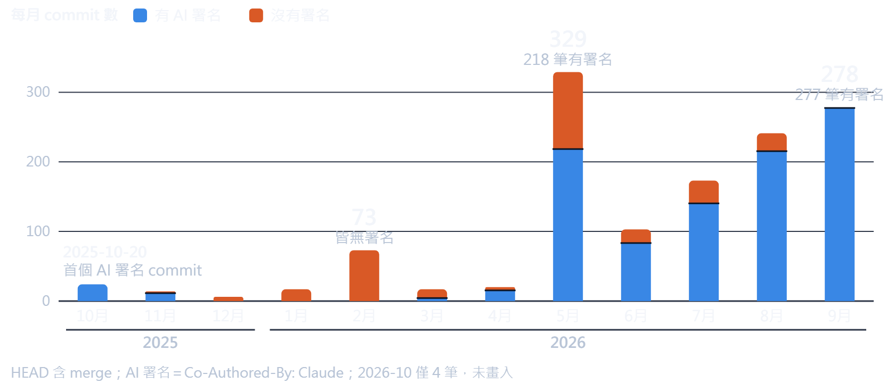
由 AI 協作：commit 標有 AI 共同作者
開場 · 速度差
最有感的一次：表單設定改成拖拉設計器
開場 · 信任曲線
三年，信任是一階一階給的
- 前奏 2022 年底 ChatGPT 問世
- 網頁上問答、翻譯；寫程式只能寫簡單函式，一堆 bug
- 起點 2023 年 Cursor 出現
- 試小範圍 2025-10
- 全權開發 2026-05 起
- spec＋plan 拆成小步，整段交給 AI；我負責規格、審查、驗證
開場 · 互動 1
先看看大家的現況
你的團隊現在有多少開發是 AI 參與的？
A 幾乎沒有
B 三成以下
C 三到七成
D 七成以上
今天的主張：信任不是一次給的，是用 spec、測試、審查一步一步換來的。
行政院生成式 AI 參考指引第 2 點：產出由承辦人做最終判斷。
這一年的變化 · 開發端
開發端：補的是周邊機制
- Agent 已能整段開發，變的是周邊
- MCP 接工具與資料
- Skills 封裝可重用的做法
- 子代理 主 AI 派出去做單一工作的 AI，分工與獨立審查
- hooks 固定時點自動檢查
- 規則檔成為專案的一部分
- 差別在五層有沒有補上
這一年的變化 · 產品端
產品端：模型輸出，程式可以直接驗證
RAG 走向多步驟
模型決定查什麼、查幾次
每一步的執行，可以交給程式
→ 案例一：法規知識應用
固定流程與 Agent 並存
固定流程寫成程式
開放式任務才交給 Agent
→ 下半場：架構怎麼選
標配：結構化輸出、工具呼叫
輸出有固定格式
程式拿到就能檢查
→ 下半場：上線前的檢查清單
下半場的主線：AI 是系統裡的元件，輸出一樣先當不可信。
這一年的變化 · 治理端
治理端：這些會變成你們標案的需求
→
接下來
各部會開始訂 AI 內控要點
變成標案裡的需求
契約裡的 AI 條款，稍後談資安時講；內控要點，下半場談產品化時講。
規則 · 治理檔
治理檔裡的三條規則原文
治理檔：放在專案裡、AI 每次開工都會先讀的規則檔，例如 CLAUDE.md、AGENTS.md
規則 1 Mini-PLM 後端治理檔
「任何修改前都需要先更新文件（spec.md、api.md）」
規則 2 客服機器人專案治理檔
「型別檢查要指定設定檔，否則什麼都沒查」
原文：裸 npx tsc --noEmit … 等同空跑
規則 3 任務管理系統後端治理檔
「外部服務還沒好時，不得回傳假的成功結果」
規則 · 任務分級
流程的輕重，跟著風險走
| 層級 | 條件 | 要做的事 |
|---|
| T0 查詢 | 不修改任何檔案 | 結論要有實際查證 |
| T1 單檔機械修改 | 只動 1 個檔，行為等價 | 改完跑測試或 build |
| T2 非程式產出 | 文件、簡報、報告 | 會重跑的腳本要實跑 |
| T3 其他 | 新功能、修 bug、多檔、改行為 | 完整流程，先確認規格 |
規則 · spec＋plan
把範圍縮小到
AI 能全權負責
- spec 規格書 做什麼、不做什麼、怎樣算完成
- plan 實作計畫 拆成能單獨驗證的小步
- 每一步交給子代理，依難度分工
規則 · 教訓與使用邊界
兩個教訓，一段使用邊界
教訓 1 實作者回報的數字
要和實際改動（diff）對帳
測試數、檔案數對不上就打回
教訓 2 治理檔也會過期
寫「共 32 個 spec」
實際已有 81 個
政府標案要多寫一段「使用邊界」
不能進 AI：真實個資、正式環境設定、機關未公開資料
經機關同意才能用：哪些工具與模型
本段帶走：治理檔至少寫清楚怎樣才算完成、什麼不能給 AI。
驗證
三種假綠燈
- 空洞測試
- 功能沒掛上畫面
- CI 一支都沒跑
- 測試指令寫錯，一支都沒選到，17 支整合測試從沒在自動建置（CI）跑過
驗證 · 對策（一）
先親眼看到紅燈
- RED 要親眼看到
- 故意改壞程式
- 把邏輯註解掉，測試必須轉紅
- 實例：4 個案例中 2 個如預期轉紅，還原後回綠
驗證 · 對策（二）
功能有沒有掛上，要實際操作才知道
驗證 · 對策（三）
讓 CI 和終審替你守門
零測試守門
測試報告至少
20個檔
案例超過 100 件，CI 才算過
全分支終審
每個 task 各自全綠，終審仍抓到
2個嚴重問題
用最強的模型做最後審查
驗證 · 互動 2
要 AI 補測試的三種提示詞
B
「幫完成任務的功能補測試，覆蓋率要到 90%。」
C
「依 spec.md 第 3 節寫測試，正向、反向情境都要有。先跑給我看全部失敗，再寫程式讓它通過；最後把關鍵邏輯註解掉，證明測試會變紅。」
驗證 · 互動 2 解答
答案是 C：要的是證據，不是綠燈
A 的問題
只要求「通過」，AI 最快的路是
寫一個永遠會過的測試
B 的問題
覆蓋率只代表程式被跑過，
不代表結果被檢查過
你要求什麼，AI 就交出什麼。
只要求綠燈，就會拿到綠燈。
好提示詞的四個要素
- 根據規格，不講覆蓋率
- 先紅再綠
- 反向測試
- 錯誤輸入、權限不足、重複操作都要測
- 拔掉關鍵邏輯，測試必須變紅
- 交出證據
資安
最容易被忽略的一段
功能做得越快，
沒人細看的程式就越多。
- AI 寫的漏洞：程式能跑、測試會過，看起來只像一般 bug
- 使用者回報：管理員改密碼一直失敗
- 使用者回報：有些設定資料莫名不見了
現況 我的企業專案只有「套件有已知漏洞」的自動提醒，再人工處理
資安
AI 工具本身也是攻擊面
設定檔
明文 token，沒被 git 忽略
一推上遠端就等於公開
子代理
未經同意，中止一筆跑了 2 小時的資料庫交易
AI 的動作有真實後果
對策 3
破壞性指令要人核准
刪除、中止、覆寫一律先問
資安 · 加強一
讓 AI 依規範做初步檢測
- 依據：OWASP 常見漏洞清單、公開漏洞資料庫（CVE／GHSA）、TWCERT/CC
- 4 個唯讀審查子代理，同時讀原始碼審查
- AI 只提假設；人在測試環境重現才修補
- 限自己的系統與測試環境；不取代正式檢測
- 下一步 補動態掃描、接國內漏洞通報
修掉的類型
log 洩漏登入資料、無鹽雜湊、匿名檔案端點、無鎖定與限流、越權讀取別人資料（IDOR）、伺服器被借去連內網（SSRF）
資安 · 加強二
安全套件＋依規格的權限測試
照權限對照表逐條驗證：用匿名、一般使用者、管理員直接呼叫後端 API（不經畫面），22 個案例寫成可重跑腳本
資安 · 政府對委外系統的要求
政府本來就要求的檢測
| 依據 | 要求 |
|---|
資通安全責任等級分級辦法
附表十 |
普、中級：弱點掃描、避免常見漏洞
防護需求「高」：另加源碼掃描、滲透測試
三個等級都要：識別第三方元件、安全需求寫進委外契約 |
資通安全管理法施行細則
第 7 條 |
客製化系統：受託者提供安全性檢測證明
核心系統或委託金額達一千萬元以上：機關自行或委託第三方檢測 |
AI 可以
把弱掃、源碼掃描、常見漏洞檢核提前到開發階段，做出初步版本，協助準備檢測證明
AI 不能
取代契約約定的正式檢測，也不能取代機關或第三方的獨立檢測
非法律意見，以機關契約與主管機關解釋為準
資安 · 標案契約
標案契約裡的 AI 條款
工程會「特別聲明」範本：機關納入個案契約後才適用
條款 1
履約不得使用陸製資通訊產品，條文明列生成式 AI（如 DeepSeek）
講者解讀：開發工具裡的模型依文義也要避開
條款 2
應保密資訊與個資，不得提供給生成式 AI
條款 3
用 AI 產出履約標的：先取得機關同意，並標明或揭露；廠商簽切結書
條款 4
違反者限期改正，逾期機關可終止或解除契約
AI 寫的程式碼算不算履約標的？依文義可能落入。開工前和機關確認，結論寫進治理檔
非法律意見，以機關契約與主管機關解釋為準
越用越強的工具
工具會換，資產要自己建
| 層 | 內容 | 累積的資產 |
|---|
| 規則 | 治理檔、分級、邊界 | 規則檔 |
| 記憶 | 原始紀錄（冷）＋整理過的知識（熱） | 知識與經驗 |
| 技能 | 做法封裝、打包 | 技能包 |
| 代理 | 依模型分工、唯讀審查 | 代理定義 |
| 驗證 | 強模型審查、hooks | 測試與腳本 |
工具不會記得你，換一套就歸零；
右欄的資產，換工具也帶得走
記憶儀表板：知識、專案、關鍵字的關聯網絡
工具 · 記憶
讓 AI 記得做過的事
會累積的記憶
- 累積 開工先查記憶，做完自動記一筆
- 紀錄庫（AI 的記憶庫）4,095 筆、142 個專案
- 跨 Agent 資料只有一份，共用
- 整理 194 筆零散紀錄，濃縮成 12 個主題
- 檢索 關鍵字優先；記憶系統第一次啟動 21 秒 → 1 秒
工具 · Playwright（一）
測試，越寫越多就越強
81支
Playwright 自動化畫面測試腳本
Mini-PLM
Mini-PLM：系統監控頁
290個檔案
任務管理系統 e2e 目錄
走查腳本與截圖
任務管理系統：統一收件匣
- 全域規則：操作瀏覽器，先寫成腳本檔再執行
- AI 自己開瀏覽器、截圖驗收，抓得到「功能沒掛上畫面」的假綠燈
資料：git 追蹤的測試腳本檔（2026-10-05）、e2e 目錄檔案數（2026-10-14）
工具 · Playwright（二）
放進程式裡，處理真瀏覽器的網站
什麼時候需要
- 要登入
- 下載由網頁 JS 觸發
- 多個請求共用登入狀態
- 防爬蟲或 WAF 檢查
講者的界線
- 有官方 API、開放資料就先用，不爬
- 控制頻率：頁間隔、固定時段
- 先看使用條款
- 驗證碼或明確擋自動化：停手，改人工
實例 1
採購網會員附件頁：需要登入、JS 觸發下載，用 Playwright 登入與下載
實例 2
法規查詢遇 WAF：瀏覽器暖機約 8 秒，檢索逾時從 30 秒放寬到 60～90 秒
工具 · 部署環境
台灣網站會擋海外 IP
- 採購網的附件下載，封鎖海外 IP
- 部署在海外區域的雲端主機，下載不到
- 三種解法
- 海外的 AI 代理與 CI 也可能連不到，爬取與測試放台灣跑
工具 · Docker＋Playwright
可重現的整合測試
- 測試時用容器開真的資料庫（PostgreSQL、Redis 等），不用假資料庫
- E2E 打真的前後端，資料庫在本機容器
- 測試庫放容器，避免測試誤連正式庫、把資料表結構變更套到正式資料
- 瀏覽器裝進映像檔：版本一致、CI 可重現
越用越強，是因為每次的證據都留了下來：記憶、測試、腳本
休息一下
上半場結束
5 分鐘後回來
下半場 AI Native：
讓 AI 成為系統裡可信的元件。
架構怎麼選
固定流程寫程式，
開放任務交給 Agent
AI 成了系統裡的元件，輸出一樣先當不可信。
程式框架（Spring AI 等）· 固定流程
適合：交易整合、細緻權限、
確定性規則、自動化測試與 CI
代價：開發成本較高
Agent＋MCP · 開放式任務
適合：多步驟任務，
讓外部 Agent 使用系統能力
代價：不確定性最高，
要白名單、看門狗、人核准
架構 · 守住底線
哪些事一定要寫進程式碼
- 文件層級的權限控管
- 寫入交易系統
- 可重跑的自動化評測與 CI
- 硬規則：白名單、引用驗證
- 逾時、重試、並行
架構 · 轉場
架構選定之後，下一個問題是…
問題 1
資料能不能出機關？
決定走雲端，還是走地端
問題 2
地端能用哪些模型？
政府場域的限制，下一段一起看
模型類型
輸入 × 輸出，每一格是一類模型
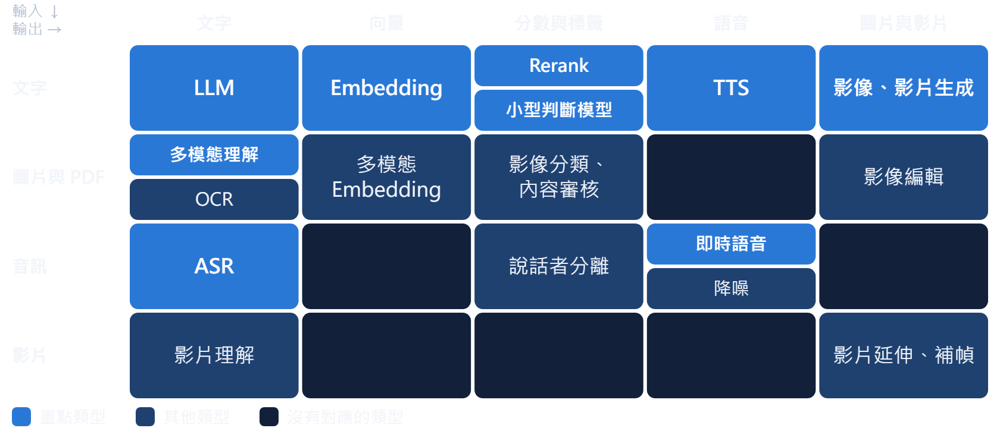
監測數值、時序資料的預測與異常偵測不在圖內：用統計或傳統 ML，LLM 負責解讀與摘要
模型 · 產生文字：LLM
LLM 有三個屬性，不是三個產品
屬性 1
推理型 vs 一般型
先想再答 ↔ 直接回答
難題較準，但較慢、較貴
屬性 2
大、中、小檔位
旗艦 ↔ 主力 ↔ 低價
產品裡多數工作，中小檔就夠
屬性 3
閉源 vs 開放權重
呼叫 API ↔ 自己部署
gpt-oss、Gemma、TAIDE 可自架，
但要自備 GPU
寫程式用最強的檔位；產品裡多用中小檔，分類這種事再往下交給小型判斷模型。
模型 · 政府使用的限制
架構第一問：
這份資料能不能出機關？
| 限制 | 公務機關 直接受拘束 | 委外廠商 納入契約才受拘束 |
|---|
| 資料出機關 |
機密文書不用；保密資訊、個資不送；封閉式地端經確認安全，可分級使用 |
保密資訊與個資，不得提供給生成式 AI |
| 陸製產品 |
全面禁用 DeepSeek，含地端下載
規定不分自架或雲端 |
履約不得用陸製資通訊產品（含生成式 AI） |
| 人審與揭露 |
承辦人做最終判斷，使用時適當揭露 |
AI 產出履約標的，先經機關同意並標明 |
| 內控紀錄 |
人工智慧基本法第 19 條：風險評估與內控 |
契約寫明異常通報、配合調查、接受稽核 |
非法律意見，以機關契約與主管機關解釋為準。
模型 · 地端替代與免 GPU
換得掉，但替代有代價
- 陸製不只 LLM
- BGE、SenseVoice、Paraformer、PaddleOCR
- 非陸製選項
- gpt-oss、Gemma、TAIDE、Whisper、EmbeddingGemma
- 替代有代價
- reranker 第一名命中率 96.7% → 86.7～93.3%
CPU：不跑 LLM
只跑嵌入、重排序、
分類器、OCR、
小尺寸語音辨識
模型 · 轉成文字
圖片、PDF、聲音，先變成文字
多模態理解／OCR · 文件審查
掃描檔、表單、截圖
版面固定：傳統 OCR 就夠，CPU 能跑
表格、手寫、小字要實測
ASR · 會議紀錄
語音轉文字，多半附時間戳
中英夾雜、專有名詞要實測
小模型可用 CPU，會後批次轉寫
講者的影片校稿工具實測：
原始逐字稿 vs
LLM 校正版
政府場域：中文 OCR、語音辨識常見工具多是陸製，要換成 Tesseract、EasyOCR、Whisper 這類。
模型 · 檢索
檢索：先撈，再排
- Embedding 先撈：快，撈前 50～100 筆
- Rerank 再排：慢但準
- 條號、判決字號走關鍵字或結構化欄位
- 換 Embedding 模型＝向量庫重建
- 兩段都能放 CPU
模型 · 判斷
判斷：小模型先分流，需要時才叫 LLM
規則→小型判斷模型→必要時才叫 LLM；低信心轉人工
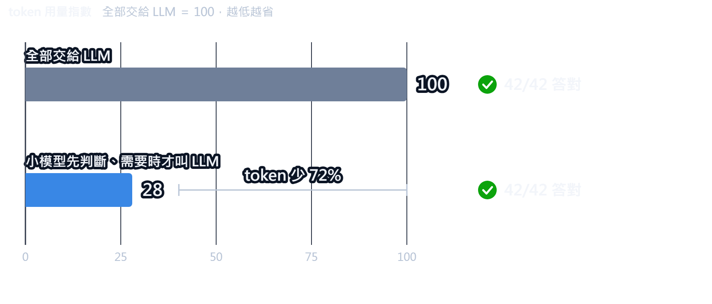
資料：講者的收件分類實測，42 筆人工標註。同樣適用：陳情案件、公文分文
模型 · 比較與收束
模型是設定，不是程式碼
| 類型 | 計價單位 | 延遲 | 自架 | 只有 CPU | 怎麼評測 |
|---|
| LLM | token | 秒～分鐘 | 開放權重可 | 不跑 | 人工標註評測集 |
| Embedding | token | 毫秒 | 容易 | 可以 | recall@k |
| Rerank | 查詢次數 | 百毫秒～秒 | 可以 | 可以 | 前 k 筆命中率 |
| 小型判斷 | 呼叫次數 | 毫秒 | 可以 | 可以 | 準確率、F1 |
| ASR | 音訊時長 | 依音檔長度 | 容易 | 小尺寸批次 | WER、CER |
情境與案例 · 六個情境
六個情境，各配一組模型與檢查
法規政策查詢 案例一
混合檢索＋LLM
檢查：引用白名單
文件審查輔助 案例二
OCR 多模態＋規則
檢查：低信心轉人工
法規判決應用 案例一
法規查詢＋多步驟 Agent
檢查：檢索外引用剔除
情境與案例 · 案例一 技能包
九個技能，全是提示詞
- 透過 MCP 接法規、判決資料
- 案情 → 檢索 → 涵攝（事實逐條套法條） → 關係圖 → 書狀
- 一行指令安裝，共用規則由腳本同步
法規技能包產出：3D 法律關係圖
情境與案例 · 案例一 易錯點
只查母法，會答錯
請求 30 萬元，裁判費多少？（民訴 77-13；子法＝依授權訂的標準）
搜「裁判費」找不到子法，要搜「提高徵收額數標準」。預錄示範 60 秒
- 用「標準、辦法、額數」命名慣例反查子法
- 拿兩筆以上實際裁定，代回公式驗算
- 環境法規同理：空污法第 17 條，費率另由主管機關訂定
情境與案例 · 案例一 雙軌檢索
兩軌結果零重疊，所以要並行
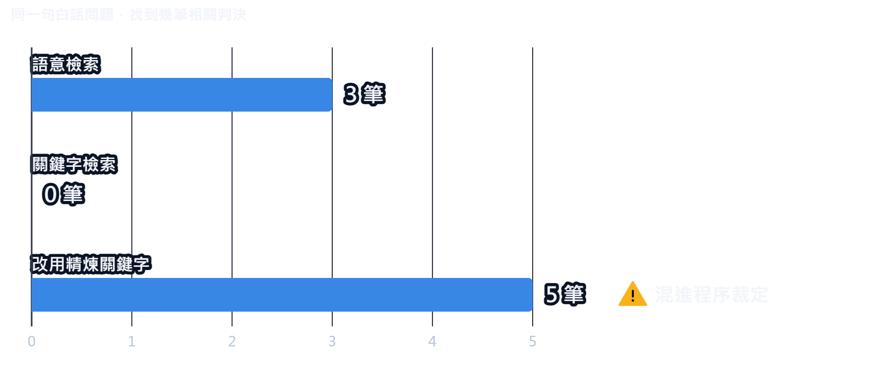
法律關係圖網站：七步驟流程，Agent 向使用者提問
情境與案例 · 案例一 技能包改寫成網站版
必做步驟寫成程式碼
| 技能包的步驟 | 改寫成網站後怎麼做 |
|---|
| 檢索規劃 | LLM 只出計畫，不給工具 |
| 雙軌檢索、去重、排序 | Java 服務確定性執行 |
| 引用白名單 | 只能引用檢索結果＋硬規則 |
| 關係圖 | LLM 初稿＋四條硬規則 |
| 潤稿 | 用語黑名單＋系統提示 |
工具交給 LLM，不保證語意與關鍵字兩種檢索都會查
情境與案例 · 案例一 系統化
系統化多出來的東西
- 測試 後端 293、前端 160 全過；評測 4 個範例案件 × 中英 2 語系，8 次全跑完
- 用量 截斷上限、300 秒看門狗、每日與每 IP 上限
- WebMCP（讓外部 AI 操作網站的介面） 開放 22 個工具讓 AI 填表；「送出」只留給人按
情境與案例 · 案例一 收尾
「只查母法」的防護，搬進網站時掉了
網站版沒有
子法反查、裁定驗算、廢棄判決防護
只寫在提示詞，搬家時掉了
每次都必須做的步驟（檢索、去重、白名單、截斷），寫成程式碼，不讓 LLM 決定做不做。
情境與案例 · 案例二 標案估價 · 文件審查輔助
從排程抓標案，到通知估價結果
排程抓取→下載文件→AI 解析工項→向量比對歷史價格→人工覆核→通知
入庫標單：每筆標示解析成功、待人工覆核或失敗（已去識別化）
情境與案例 · 案例二 模型解析
規則優先，AI 兜底
- XML、Excel、PDF：先用規則解析
- 失敗才交 LLM，輸出 JSON＋confidence
- ≥ 0.85 入庫，否則人工覆核
- 掃描圖：300 DPI 讀圖，人工預覽才入庫
- 浮水印先清掉：抽出項數 0 → 141
情境與案例 · 案例二 踩坑
prompt 變長，耗時翻倍撞上 120 秒
另外兩個坑：向量維度超過索引上限、容器裡跑瀏覽器會留殭屍程序
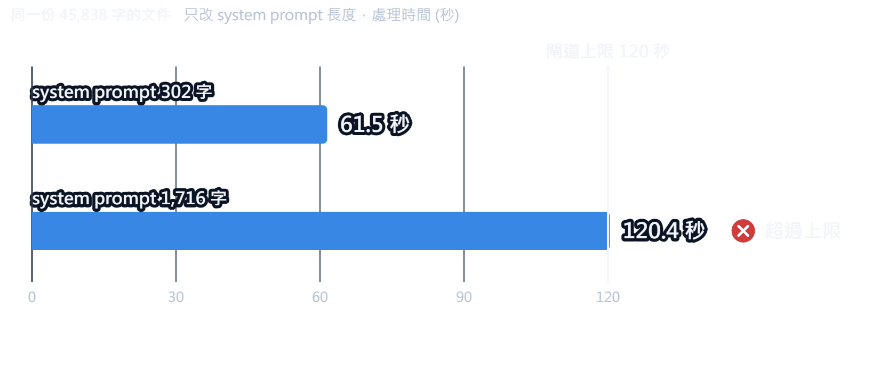
導入與產品化 · 產品化清單
上半場的紀律，下半場照樣用
導入與產品化 · 常見問題（一）
兩個一定會踩的坑：空回應與逾時
推理吃掉輸出額度，可見回應是空的，
系統卻標成完成
我同時送 16 批給模型，約 12% 回壞 JSON
推理模型輸出一長，就撞上
閘道的時間上限，調低推理也沒用
對策
換非推理模型、讓 AI 少輸出
外掛逾時要低於平台逾時
導入與產品化 · 常見問題（二）
驗證全綠，內容卻漏了；資料也不能亂用
HTML 轉 PPT 的轉換器，整塊略過不認得的元件
導入與產品化 · 互動 4
先投票，再講我還沒做到的
你們的 AI 專案目前最卡在哪？
A 準確度
B 資料治理與合規
C 使用者接受度
D 維運成本
近期作品 · 字導字演
字導字演：刪逐字稿，就等於剪片
近期作品 · 知識島大冒險
知識島大冒險：6 天做出 3D 學習島
會後試玩 kevintsai1202.github.io/learning-game
近期作品 · 為什麼做得出來
不是 AI 一次生成，
是一條有關卡的生產線
- spec → plan → 子代理開發 → 測試 → e2e
- 我定規格、拆範圍、審查、驗收
- 三年前只能寫簡單函式；現在一個人，三週做桌面剪輯工具、六天做 3D 學習網站
- 同一條生產線也適用政府系統：規格 → 計畫 → 子代理 → 測試
結尾 · 主張，第三次
AI 的產出
先當成不可信
再用證據換取信任
- 寫程式 證據是測試、審查、CI
- AI 進系統 證據是評測、護欄、人工確認
行政院生成式 AI 參考指引第 2 點：產出由承辦人做最終判斷
結尾 · 帶回去
明天就能做的 5 件事
- 1 治理檔（CLAUDE.md 等）寫清楚「完成的定義」與「什麼資料不能給 AI」
- 完成＝附上實跑證據：指定哪些測試、build 要過，不接受「應該沒問題」
- 2 開工前和機關確認 AI 工具與模型的使用範圍，結論寫進治理檔
- 3 挑一支 AI 寫的測試，把被測程式改壞，看它會不會變紅
- 手動點過的流程，改寫成 Playwright 腳本，讓測試越累積越多
- 4 為一個 AI 功能做 30 筆人工標註的評測集
- 5 法規類輸出加引用白名單，每次都要做的步驟搬進程式碼
結尾
信任不是一次給的，
是用證據一步一步換來的
謝謝大家。